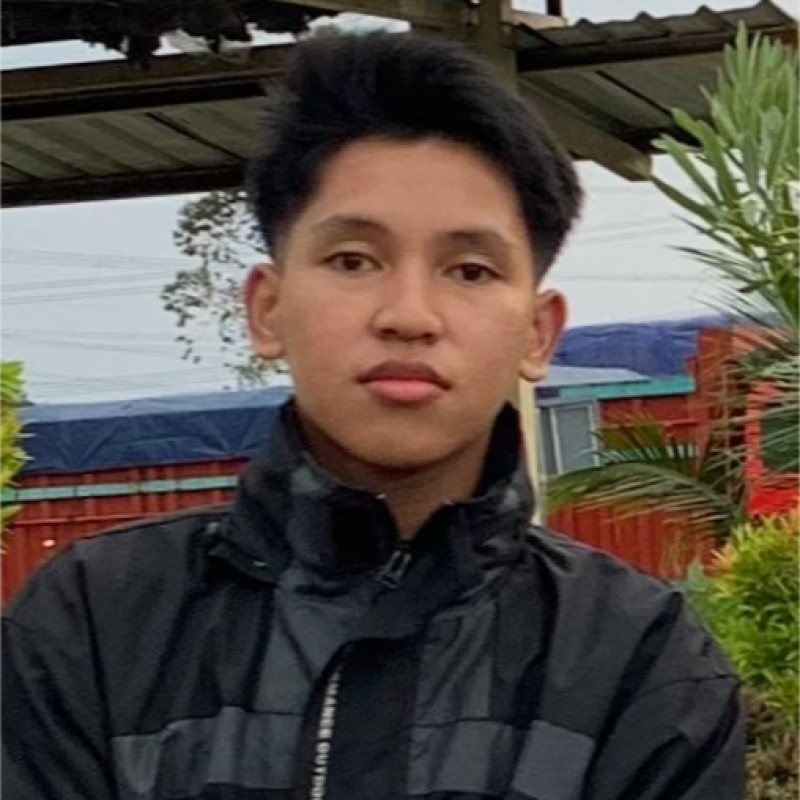

Pelajari lebih dalam tentang latar belakang, motivasi, dan perjalanan saya di dunia teknologi.

Saya adalah siswa SMK kelas XI TKJ 1 di jurusan Teknik Komputer dan Jaringan (TKJ), memiliki minat besar dalam dunia jaringan komputer, administrasi sistem, dan keamanan cyber.
Saya percaya bahwa infrastruktur jaringan yang kuat adalah fondasi dari dunia digital yang kita andalkan setiap hari. Saya terus belajar, bereksperimen, dan membangun keterampilan untuk menjadi seorang profesional IT yang berdampak.
Ketika tidak sedang berkutat dengan kabel dan konfigurasi, saya senang mengeksplorasi topik baru seputar keamanan siber dan pengembangan teknologi masa depan.
// Tertarik bekerja sama?